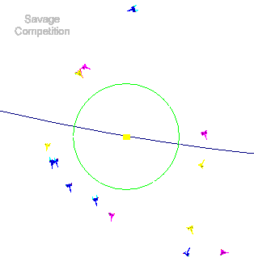

Gravity Well is easy to install, requiring no particular path or directory structure. The following steps describe how to install the program.1. Locate and run SETUP.EXE in the directory with the Gravity Well files.
2. Follow the installation instructions within the install program.
3. To play Gravity Well, double click on the Gravity Well icon in the Games group of the Program Manager.
| Table Of Contents | Getting A Fast Start |